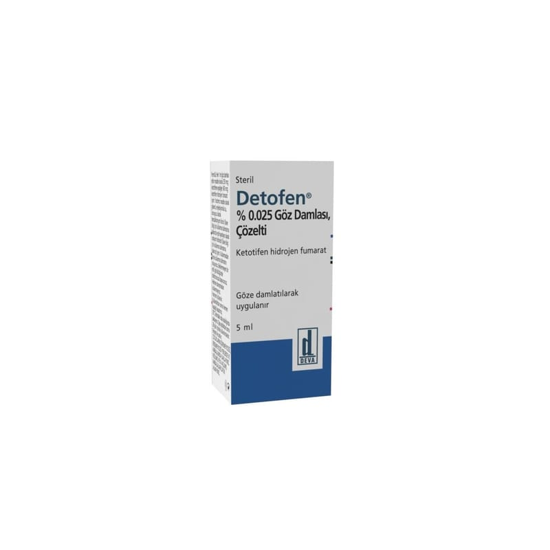

Detofen %0.025 Göz Damlası, Çözelti, 5 ml

Ne için kullanılır
KT · Bölüm 1DETOFEN etkin madde olarak bir ml çözeltide 250 mcg ketotifen (345 mcg ketotifen hidrojen fumarat şeklinde) içerir. DETOFEN partikül içermeyen, berrak ve renksiz çözeltidir ve 5 ml çözelti içeren şişeler ile kullanıma sunulmaktadır. DETOFEN alerji için kullanılan ilaçlar grubuna dahildir, alerji nedeniyle gözlerde meydana gelen kaşıntı ve kızarıklığın tedavisinde kullanılır.